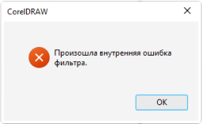
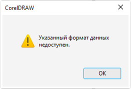

В мире дизайна мы сделали выбор в пользу Adobe, оставив за бортом
формат
CorelDraw. Давайте разберем, почему именно Adobe стал нашим надежным союзником в творчестве.
Adobe - это компания, представляющая широкий спектр продуктов, среди
которых
вы, вероятно, знакомы с основными:

Более тысячи специалистов по всему миру активно участвуют в разработке
и
обеспечивают высокое качество продуктов и их разнообразные возможности.
В то время как CorelDraw ограничивается только CorelDraw.
В то время как CorelDraw ограничивается только CorelDraw.
Поддержка CorelDraw практически отсутствует в Европе и США, поскольку
более
98% типографий в этих регионах не используют данный формат.
Главный недостаток CorelDraw заключается в преобразовании документа во
внутренний формат bitmap. Это особенно заметно при обработке растровых изображений, где могут
возникнуть различные артефакты, такие как неожиданные грани, изменение цветов или полная
инверсия
изображения.


В отличие от этого, Illustrator лишен подобных неожиданностей и
обладает
полной совместимостью с форматами PDF и EPS, необходимыми для полиграфии. Важно отметить, что,
несмотря
на возможность сохранения файлов в формате PDF, CorelDraw плохо распознает PDF файлы, что может
привести
к потере некоторых элементов макета. Поэтому при подготовке макета для офсетной полиграфии
Illustrator
остается оптимальным выбором.

Современная лицензия CorelDraw может оцениваться в 600 долларов в год на
одного пользователя, что может быть финансово недоступным для многих типографий. Из-за этого они
вынуждены использовать устаревшие версии программы, что может привести к искаженному отображению
контента.
Обучение наших дизайнеров работе в CorelDraw требовало бы значительного
времени. Учитывая, что это формат с тенденцией к упадку, вкладывание человеческого капитала в
него
становится неоправданно.
Используя среду Adobe, мы вкладываемся в инновации, качество и
признание
в мировом масштабе. Присоединяйтесь к нам в этом увлекательном путешествии в мир творчества, где
каждый
проект становится настоящим произведением искусства.
-
 Почему мы не используем CorelDraw
Почему мы не используем CorelDraw
-
 В команде CREAT работают только лучшие
В команде CREAT работают только лучшие
-
 Откуда мы черпаем идеи для дизайна
Откуда мы черпаем идеи для дизайна
-
В команде CREAT работают только лучшие